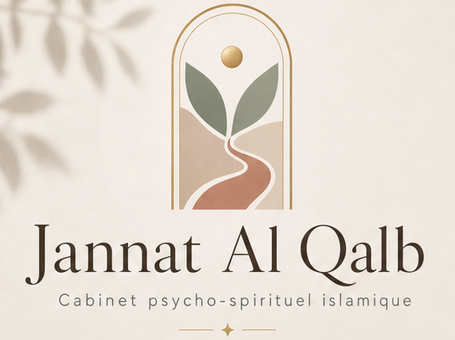
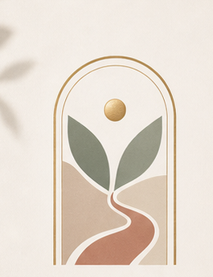

Revenir à l'essentiel, c'est retrouver la paix du cœur et la clarté de l'être.
Un espace doux, confidentiel et sans jugement, où le cœur se dépose et l'âme retrouve sa clarté.
Avant d'accompagner les cœurs, j'ai pris soin des corps. Pendant des années, en tant qu'aide-soignante, ma mission était de soigner les blessures visibles — mais au-delà de la souffrance physique, je percevais presque toujours une souffrance psychologique, en amont ou en écho, que je n'avais ni le temps ni la formation pour prendre en charge. Je voyais les cicatrices sur le corps, et je ressentais celles, cachées, à l'intérieur.
Cette expérience a semé une conviction que je porte encore aujourd'hui : on n'a pas une santé mentale d'un côté et une santé physique de l'autre. Notre corps est un dépôt (amāna) qu'Allāh nous confie — en prendre soin, c'est aussi prendre soin de son âme et de son cœur.
Je m'appelle Nawel, psychopraticienne et conseillère en psychologie islamique, conseillère d'éducation spécialisée dans les TND et DYS. J'accompagne celles et ceux qui traversent une épreuve, un doute ou une quête de sens, en reliant les outils de la psychologie (approche TCC, gestion des émotions) à une dimension spirituelle islamique.
Mon rôle n'est pas de juger ni d'imposer, mais d'offrir un espace sûr et confidentiel où déposer ce qui pèse, retrouver l'équilibre du cœur et cheminer, à ton rythme, vers plus de clarté et de paix intérieure.
Un accompagnement qui s'appuie sur des formations sérieuses, alliant psychologie, spiritualité et neuropédagogie.
🌱 Formation continue : je me forme en permanence — actuellement 4 cursus au sein de l'Institut de la Médecine Prophétique (Psychologie · Médecine prophétique · Maux de la femme · Maux des enfants), ainsi qu'en TCC (thérapies cognitivo-comportementales).
Une approche qui relie le psychologique et le spirituel, avec douceur et respect.
Un espace d'écoute bienveillant et sans jugement.
Retrouver l'harmonie intérieure et la clarté émotionnelle.
Cheminer vers soi et se (re)aligner en douceur.
Être pleinement là, avec douceur et respect.
Apaiser le cœur, comprendre ses émotions et avancer avec douceur, à ton rythme. En cabinet, à domicile ou en visio selon ta zone.
Des séances à l'unité, des packs d'accompagnement sur plusieurs mois, un bilan d'orientation pour clarifier tes priorités, ou un accompagnement par écrit pour une problématique ciblée — la formule se choisit ensemble, selon ton besoin et ton rythme, lors du premier échange.
Des formules pensées pour concilier qualité d'accompagnement, accessibilité et justice.
◆ Un tarif solidaire peut être étudié, au cas par cas ◆
Qu'Allāh facilite chaque cheminement.
📍 En cabinet · à domicile · en visio
Des chemins pensés pour différents moments de vie — à choisir ensemble selon ce que tu traverses.
Le socle de notre travail ensemble : un espace d'écoute pour toute épreuve, tout doute, toute quête de sens — à ton rythme, sans jugement.
Un accompagnement pour apprivoiser les émotions qui débordent — comprendre ce qui se joue, et retrouver pas à pas un peu de calme et de clarté.
Un parcours de préparation au mariage : se connaître, choisir sans idéaliser, poser les bases d'une union sereine.
Un accompagnement de couple pour désamorcer les tensions, apaiser la communication et se retrouver après les épreuves du quotidien conjugal.
Honorer le lien
Traverser la peur du grand voyage et l'épreuve du deuil avec l'espérance de la récompense, en honorant le lien qui demeure au-delà de la perte.
Un espace pour les parents qui veulent mieux comprendre leur adolescent, et pour l'ado lui-même, un lieu pour apprendre à se comprendre et à s'exprimer.
Pour les femmes autoentrepreneuses en perte d'élan : retrouver confiance, énergie et une posture stable face aux défis de l'activité.
Pensé pour les familles d'enfants au profil neuro-atypique (TDAH, TSA, DYS, HPI) : comprendre, apaiser, avancer avec plus de clarté au quotidien.
Des ressources pensées pour prolonger le travail fait ensemble — utilisables en autonomie, ou en complément d'un accompagnement.
Le juste équilibre du cœur
Un compagnon doux du quotidien pour poser la charge mentale et retrouver l'équilibre à ton rythme — un allié du parcours Posture sereine.
Retrouver le calme, une respiration à la fois
Un espace de respiration, de méditation et d'apaisement des émotions — un complément à tout accompagnement, et tout spécialement au parcours Sortir du Brouillard.
Où tu en es, là, maintenant
Un baromètre doux de ton fonctionnement du moment, sans jugement — un soutien discret dans le quotidien, 100% local.
De vrais retours, partagés avec l'accord des personnes accompagnées. 🌿
Un temps d'écoute, en toute confidentialité. On part de ce que tu vis, et on chemine ensemble à ton rythme, sans jugement, avec des outils concrets et de la douceur.
Oui, totalement. Ce qui se partage en séance reste en séance. C'est un espace sûr, pensé pour que tu puisses te déposer en confiance.
Les deux, selon ta zone géographique. En visio où que tu sois, en présentiel selon les disponibilités. On choisit ensemble ce qui te convient le mieux.
Non. L'accompagnement honore ta foi et tes valeurs, où que tu en sois de ton cheminement. La dimension spirituelle est proposée avec douceur, jamais imposée.
Non. C'est un soutien psycho-spirituel et émotionnel : il ne remplace ni un diagnostic, ni un suivi médical ou psychologique. En cas de besoin, je t'orienterai vers le professionnel adapté.

Le premier pas est souvent le plus doux. Réserve ta première consultation, ou écris-moi simplement. Un tarif solidaire peut être étudié au cas par cas.
📅 Réserver ma séanceUn accompagnement islamique et bienveillant pour l'équilibre du cœur et la clarté de l'âme.